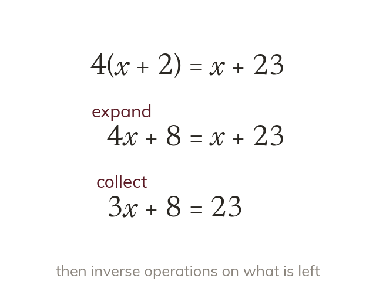

Method
The method never changes. Expand any brackets, collect the unknown onto one side, then apply inverse operations.
However complicated an equation looks, the method is unchanged: expand any brackets, collect the unknown onto one side, then apply inverse operations.